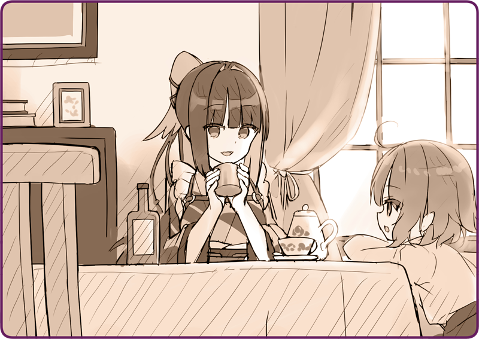

Tôi khẽ nghiêng chiếc cốc có chứa thứ chất lỏng màu vàng kim.
Rosa: “Ngon không chị?”
Ban đầu cô bé định dùng dầu chuyên dụng cho
Hình nhân Cơ khí, nhưng có vẻ như chất lượng không tốt mấy, nên em đổi cho tôi dầu hướng dương dùng để nấu ăn. Ngồi trên ghế tiếp thêm nhiên liệu, tôi cảm thấy khí thải từ chiếc cặp của mình dần trở nên ổn định hơn.

Rosa: “Sao chị lại xin lỗi ạ?”
Rosa: “...... Em nghĩ là không sao đâu.”
Rosa: “Vì em thân với chị mà.”
Rosa: “Không phải ạ?”
Rosa: “Vậy nên, nếu chị gặp rắc rối thì cứ nói với em. Chúng mình… là bạn bè mà phải không?”
Tôi hiểu ý nghĩa ẩn chứa trong những lời đó.
Dù vậy, hàm ý của chúng quá siêu thực, khiến tôi cảm thấy thật lạ lùng.
Rosa: “Không phải ạ?”
Rosa: “Vâng!”
Rosa: “Chị cứ yên trí!”
Cô bé nhoẻn cười.
Một nụ cười dịu dàng mà tôi chẳng thể tưởng tượng nổi vào lần đầu gặp em.
Rosa: “Trên hòn đảo này thì không ạ.”
Rosa: “Tại vì em lúc nào cũng ở cạnh ông mà. Với lại trên đảo trẻ con tầm tuổi em cũng không nhiều, mà những đứa ấy lại không chơi với em…”
Tôi nhớ lại những điều anh bưu chính viên nói khi trước. Người dân đảo Helena không hề tin tưởng người ngoài… xem ra lý do không chỉ đơn giản là vì Karasuba tôi là Hình nhân rồi.
Rosa: “Chẳng ai tin lời em nói cả…”
Rosa: “Nhưng mà, chẳng ai tin lời em hết.”
Rosa: “...... Thật không?”
Rosa: “.........”
Em hướng tầm mắt xuống, lặng im một hồi.
Chừng như em đang trầm tư suy nghĩ gì đó, rồi khi đã quyết định, em ngẩng mặt lên.
Rosa: “...... Sâu trong núi, có một chiếc phi cơ Hoàng Quốc phải đỗ khẩn cấp ạ.”
Rosa: “Ở trong đó có một Hình nhân cỡ nhỏ.”
Rosa: “Em hơi bất ngờ, nhưng cũng muốn giúp cậu ấy… Có điều, đến khi em nói lại cho mấy đứa trên đảo… thì tụi nó bảo là em xạo sự…”
Tôi ngẫm lại những gì chủ nhân và Thiếu tá Okunomiya trao đổi hôm qua.
Tôi uống ừng ực cốc dầu hướng dương rồi đứng dậy.
＊ ＊ ＊
Chúng tôi cẩn thận lái Hình nhân Cơ khí nông nghiệp trên đường tuyết để đi vào rừng.
Rosa: “Ngay trước khi sang đông, là đợt tuyết đầu mùa ấy ạ. Lúc đấy em đi với ông, nhưng Hình nhân Cơ khí tự nhiên hết nhiên liệu, mà trời cũng tối rồi nên chúng em không về nữa… và trú lại ở một chòi canh. Em thấy chiếc phi cơ lúc khuya. Em có bảo ông rồi, nhưng ông lại dặn đừng nói với ai…”
Chịu cảnh rung xóc trên lưng Hình nhân, tôi mở bản đồ ra.
Phía bắc quần đảo Helena có địa hình núi đồi trùng điệp cùng vô số ao hồ. Càng vào sâu đường càng nhấp nhô hơn, và cuối cùng chúng tôi đã tới một ngọn núi cao tầm 500 mét. Theo lời Rosa, chiếc phi cơ đã hạ cánh đâu đó quanh chân núi này.
Rosa: “Dân địa phương thường không tới gần nơi này vào mùa đông đâu ạ.”
Vào mùa hè thì chắc nơi này còn có cây cối xanh tươi, chứ mùa đông như giờ chỉ thấy cơ man nào là tuyết.
Rosa: “Từ đi đây thẳng một lèo sẽ gặp một cái hồ lớn. Chiếc phi cơ hạ cánh ở bờ bên kia ấy ạ.”
Rosa: “Hồ đóng băng rồi nên không sao đâu.”
Rosa: “Rừng sâu lắm, nên chắc không được đâu chị.”
Của đáng tội, có lẽ chính vì đáp xuống đây nên mới không một ai phát giác ra nó.
Sau khi tiến thêm một đoạn trên con đường tuyết, rốt cuộc tầm nhìn của chúng tôi cũng được mở rộng.
Là một hồ băng.
Sau khi rón rén để nó đặt chân lên mặt băng, tôi đã có thể khẳng định hồ băng này chịu được tải trọng của một
Hình nhân Cơ khí. Lý thuyết là thế, chứ nhiều khả năng độ dày của mặt băng tùy chỗ sẽ khác nhau. Để cho chắc, chúng tôi quyết định đi men theo bờ hồ kẻo nhỡ có gì còn chạy được.
Rosa: “Lòng vòng quá chị nhỉ.”
Cuối cùng chúng tôi cũng đi được nửa vòng hồ và đến được nơi cần tới.
Thứ đầu tiên đập vào mắt tôi là những thân cây đổ rạp xuống như bị ai đó xé toạc ra. Một vật có khối lượng lớn đã đâm sầm vào nơi này.
Rosa: “...... Bên này ạ.”
Chúng tôi bước qua những hàng cây.
Cuối cùng, chúng tôi tiếp cận một nơi có tuyết phủ trông đến là thiếu tự nhiên.
Tôi bước xuống khỏi
Hình nhân Cơ khí và cẩn trọng tiến lại gần. Sau khi tôi khẽ khàng phủi tuyết đi, lộ ra bên dưới là buồng lái phi cơ.
Rosa: “Lúc em tìm thấy thì đã chẳng còn ai rồi ạ.”
Nếu thật sự tên gián điệp đã ngồi trên chiếc phi cơ này, thì tất nhiên hắn sẽ muốn bỏ chạy càng sớm càng tốt.
Chẳng có dấu vết gì như vậy cả. Mà vốn dĩ, liệu có thể chở theo một Hình nhân trong chiếc phi cơ bé tẹo chừng này không?
Rosa: “Chiếc phi cơ này có hai buồng lái ạ.”
Tôi đặt chân lên phần cánh, bước ra phía sau buồng lái và phủi tuyết thêm lần nữa.
Thông qua cửa kính chắn gió, tôi có thể thấy một gương mặt đang say ngủ.
Là một Hình nhân dạng thiếu nữ. Những đường nét mềm mại trên má, mái tóc màu anh đào cùng bộ kimono màu trắng…
Tôi từng thấy người này ở đâu rồi. Trên tít báo đăng về thành tích cuộc đại chiến, có một mục thuật lại việc Hoàng Đô hào hùng cất lên khúc quân ca. Tâm điểm của cuộc diễu binh lộng lẫy đó là một Hình nhân. Vũ khí quyết định của Hoàng Quân. Sự tồn tại mang về chiến thắng huy hoàng…
Rosa: “Chị Karasuba!”
Giọng của Rosa lộ rõ bất an, khiến tôi phải ngoái lại nhìn.
Rosa: “Âm thanh… gì thế này?”
Tiếng cánh quạt báo hiệu sự chẳng lành.
Tôi nhận ra ngay âm thanh này.
Tôi lập tức nhìn lên bầu trời. Tại nơi lưng chừng núi, là một vật thể vô hồn đang lơ lửng.
Một chiếc vỏ ngụy trang bằng thép màu xám nhạt. Hai thiết bị phi hành hình cánh gắn sau lưng. Khuôn mặt không chút cảm xúc đang nhìn về phía chúng tôi.
Rosa: “Hơ?”

 “Phù.”
“Phù.”